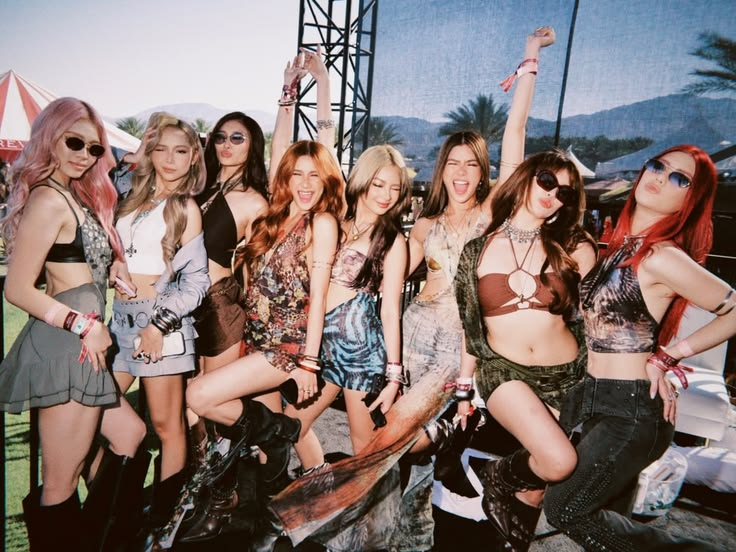
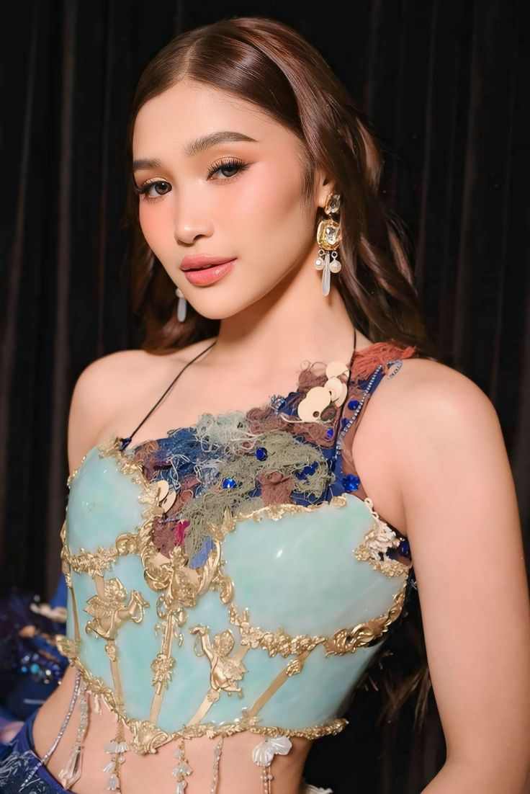
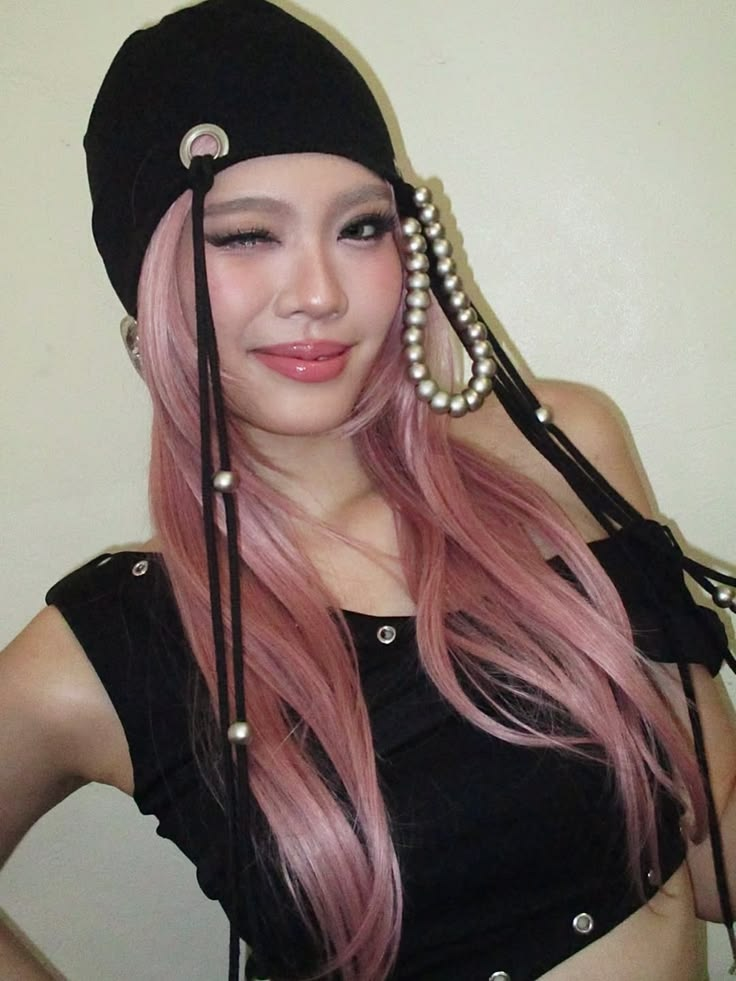

Discover the music, journey, and inspiring story of BINI, an eight-member Filipino girl group.

BINI is an eight-member Filipino girl group known for their music, energetic performances, and unique personalities.
The group continues to inspire their fans through their songs, hard work, friendship, and dedication.
Get to know the eight talented members of BINI

Jhoanna is the leader of BINI. She is known for her leadership, vocals, and confident stage presence.
Aiah is known for her charm, confidence, and talent as a performer and member of BINI.
Colet is known for her strong vocals, dancing skills, and energetic personality.
Maloi is known for her powerful vocals, cheerful personality, and memorable performances.
Gwen is known for her calm personality, beautiful voice, and captivating stage presence.

Stacey is known for her bright personality, dancing skills, and energetic performances.
Mikha is known for her charisma, dancing, and strong presence during BINI performances.
Sheena is known for her dancing skills, cheerful personality, and fun performances.